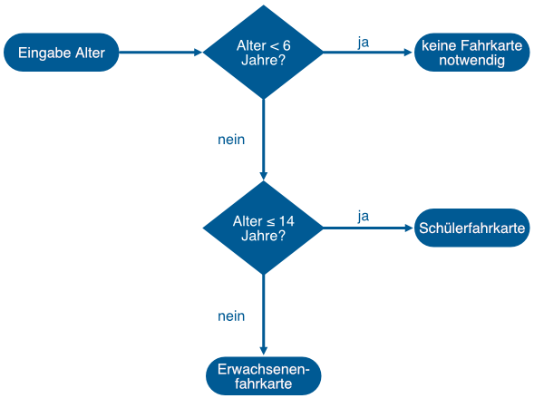

5.3 Programmverzweigungen mit mehreren Zweigen: if – elif – else
Contents
5.3 Programmverzweigungen mit mehreren Zweigen: if – elif – else#
In unserem Alltag kommen häufig Entscheidungen zwischen zwei Möglichkeiten vor. Wenn ich an eine T-Kreuzung komme, muss ich mich entscheiden: links oder rechts? Betrete ich ein Gebäude entscheide ich zwischen Treppe oder Fahrstuhl. Mein Alter entscheidet darüber, ob ich etwas darf oder nicht darf. Für diese Wahl zwischen zwei Möglichkeiten gibt es zweiteilige Programmverzweigungen. Und auch bei zweiteiligen Programmverzweigungen ist noch nicht Schluss, denn vielleicht kommt man ja an eine Viererkreuzung … Daher behandeln wir in diesem Kapitel Programmverzweigungen mit mehreren Zweigen.
Lernziele#
Lernziele
Sie können Programmverzweigungen mit zwei Zweigen mittels if - else implementieren.
Sie können mehrteilige Programmverzweigungen mit if - elif - else implementieren.
Programmverzweigungen mit zwei Zweigen: if – else#
Wir erweitern die Syntax mit dem if-Block um ein neues Element, nämlich den sogenannten else-Block:
if bedingung:
anweisungsblock 1
else:
anweisungsblock 2
Wichtig ist, dass die Anweisungen, die nur bedingt ausgeführt werden sollen, eingerückt sind!
Falls die Bedingung erfüllt ist, wird der 1. Anweisungsblock ausgeführt, ansonsten der 2. Anweisungsblock. Danach führt der Python-Interpreter alles nach dem if-else-Konstrukt aus, d.h. der Interpreter macht mit dem normalen Programmablauf weiter.
Hier wieder das Beispiel mit dem Alter:
alter = int(input('Wie alt sind Sie? '))
if alter >= 18:
print('Sie sind volljährig, Sie dürfen Alkohol kaufen.')
else:
print('Sie sind noch nicht volljährig und dürfen daher keinen Alkohol kaufen.')
print('Jetzt haben wir aber genug über den Alkoholkauf geredet...')
Mini-Übung
Schreiben Sie ein Skript, das nach dem aktuellen Monat fragt (1 für Januar, 2 für Februar, 3 für März, usw.). Wenn der aktuelle Monat Januar bis Juni ist, soll ausgegeben werden: “Dieser Monat gehört zur 1. Jahreshälfte.” Ansonsten soll ausgegeben werden: “Dieser Monat gehört zur 2. Jahreshälfte.”
# Geben Sie nach diesem Kommentar Ihren Code ein:
Lösung
# Eingabe
monat = int(input('Geben Sie bitte den aktuellen Monat ein, 1 für Januar, 2 für Februar usw.'))
# Verarbeitung und Ausgabe
if monat <= 6:
print('Dieser Monat gehört zur 1. Jahreshälfte.')
else:
print('Dieser Monat gehört zur 2. Jahreshälfte.')
Mini-Übung
Schreiben Sie ein Skript, das nach der aktuellen Temperatur fragt. Wenn die aktuelle Temperatur kleiner gleich 3 ˚C ist, dann lassen Sie ausgeben: “Vorsicht, es besteht Glatteisgefahr!” und ansonsten “Kein Grund zur Sorge.”
# Geben Sie nach diesem Kommentar Ihren Code ein:
Lösung
# Eingabe
temperatur = float(input('Welche Temperatur haben wir aktuell?'))
# Verarbeitung und Ausgabe
if temperatur <= 3:
print('Vorsicht, es besteht Glatteisgefahr!')
else:
print('Kein Grund zur Sorge.')
Programmverzweigungen mit vielen Zweigen: if – elif – else#
Eins, zwei, drei, viele … häufig müssen mehr als zwei Fälle unterschieden werden. In einer Mini-Übung haben wir beispielsweise überprüft, ob eine Zahl negativ oder positiv oder Null ist. Ein Beispiel aus dem Alltag ist der Kauf einer Fahrkarte für den ÖPNV. Meist wird beim Ticketpreis unterschieden, ob die Person jünger als 6 ist (keine Fahrkarte notwendig), zwischen 6 und 14 ist (Schülerfahrkarte) oder älter als 14 (Erwachsenenfahrkarte). Da es jetzt drei Altersklassen gibt, können wir kein if-else-Konstrukt benutzen, denn nur weil die Person beispielsweise nicht jünger als 6 ist wissen wir noch lange nicht, ob die Person eine Schülerfahrkarte oder eine Erwachsenenfahrkarte braucht.
Probieren wir es einfach:
alter = 8
if alter < 6:
print('keine Fahrkarte notwendig')
if alter <= 14:
print('Schülerfahrkarte')
if alter > 14:
print('Erwachsenenfahrkarte')
Schülerfahrkarte
Sieht zunächst einmal gut aus. Für ein Alter von 8 Jahren wird tatsächlich Schülerfahrkarte ausgegeben. Wenn wir jetzt aber das Alter auf 5 Jahre setzen, so bekommen wir zwei Ausgaben:
alter = 5
if alter < 6:
print('keine Fahrkarte notwendig')
if alter <= 14:
print('Schülerfahrkarte')
if alter > 14:
print('Erwachsenenfahrkarte')
keine Fahrkarte notwendig
Schülerfahrkarte
Wir erhalten die Ausgabe "keine Fahrkarte notwendig", weil die Bedingung des
ersten if-Konstrukts erfüllt ist (alter < 6). Danach wird aber auch noch die
Ausgabe "Schülerfahrkarte" angezeigt, weil auch die Bedingung des zweiten
if-Konstrukts (alter <= 14) erfüllt ist. So geht es also nicht, zwischen drei
Bedingungen zu unterscheiden.
Probieren wir es mit einem zusätzlichen if-else-Konstrukt für die Unterscheidung der Kinder.
alter = 5
if alter < 6:
print('keine Fahrkarte notwendig')
else:
print('Schülerfahrkarte')
if alter > 14:
print('Erwachsenenfahrkarte')
keine Fahrkarte notwendig
Jetzt sind aber Erwachsene problematisch:
alter = 27
if alter < 6:
print('keine Fahrkarte notwendig')
else:
print('Schülerfahrkarte')
if alter > 14:
print('Erwachsenenfahrkarte')
Schülerfahrkarte
Erwachsenenfahrkarte
Tatsächlich läuft unser Programm-Code nur korrekt, wenn wir in den else-Zweig noch zusätzlich zwischen “jünger als 14” und “älter als 14” unterscheiden.
Führen Sie die folgende Code-Zelle mehrfach aus. Ändern Sie dabei das Alter. Probieren Sie beispielsweise 5, 8, 11, 16, 21 und Ihr Alter aus.
alter = 27
if alter < 6:
print('keine Fahrkarte notwendig')
else:
if alter <= 14:
print('Schülerfahrkarte')
else:
print('Erwachsenenfahrkarte')
Erwachsenenfahrkarte
Um den obigen Code besser zu verstehen, zeichen wir den Ablauf schematisch:
Es wäre schöner, wenn es für solche Mehrfachverzweigungen etwas übersichtlicheren Code gäbe. Und in der Tat, den gibt es. Man könnte sozusagen den Start des else-Konstruktes mit dem nachfolgenden if-Konstrukt verschmelzen. Das Ergebnis davon ist die if-elif-else-Syntax. Allgemein sieht das if-elif-else-Konstrukt so aus:
if bedingung 1:
anweisungsblock 1
elif bedingung 2:
anweisungsblock 2
elif bedingung 3:
anweisungsblock 3
...
else:
anweisungsblock n
Hier die besser lesbare Version der Unterscheidung von Zahlen in negative Zahlen, 0 und positive Zahlen aus der obigen Mini-Übung:
a = 17
if a == 0:
print('a ist Null.')
elif a < 0:
print('a ist negativ.')
else:
print('a ist positiv.')
a ist positiv.
Und jetzt noch einmal eine besser lesbare Version des Fahrkartenautomaten:
alter = 27
if alter < 6:
print('keine Fahrkarte notwendig')
elif alter <= 14:
print('Schülerfahrkarte')
else:
print('Erwachsenenfahrkarte')
Erwachsenenfahrkarte
Mini-Übung
Sie finden den aktuellen Bußgeldkatalog für Geschwindigkeitsüberschreitungen mit dem PKW im Internet auf der Seite: https://www.bussgeldkatalog.org/geschwindigkeitsueberschreitung/ Schreiben Sie ein Skript, dass abhängig von der Geschwindigkeitsüberschreitung ausgibt, welche Strafe in Euro verhängt wird. Die Tabelle für das Jahr 2022 lautet wie folgt:

# Geben Sie nach diesem Kommentar Ihren Code ein:
Lösung
# Eingabe
verstoss = int(input('Wieviel zu schnell ist die Person gefahren? '))
# Verarbeitung und Ausgabe
if verstoss <= 10:
print('20 EUR')
elif verstoss <= 15:
print('40 EUR')
elif verstoss <= 20:
print('60 EUR')
elif verstoss <= 25:
print('100 EUR')
elif verstoss <= 30:
print('150 EUR')
elif verstoss <= 40:
print('200 EUR')
elif verstoss <= 50:
print('320 EUR')
elif verstoss <= 60:
print('480 EUR')
elif verstoss <= 70:
print('600 EUR')
else:
print('700 EUR')
Mini-Übung
Schreiben Sie ein Skript, das die aktuelle Temperatur von einem Benutzer oder einer Benutzerin abfragt. Wenn die Temperatur
<= - 10 ˚C ist, dann Ausgabe: “Es ist bitterkalt.”
<= 0 ˚C ist, dann Ausgabe: “Es ist kalt.”
<= 10 ˚C ist, dann Ausgabe: “Es ist kühl, aber OK.”
<= 20 ˚C ist, dann Ausgabe: “Es ist frühlingshaft.”
<= 30 ˚C ist, dann Ausgabe: “Es ist heiß!”
> 30 ˚C ist, dann Ausgabe: “Das ist ja nicht mehr auszuhalten heiß!!!”
# Geben Sie nach diesem Kommentar Ihren Code ein:
Lösung
# Eingabe
temperatur = float(input('Welche Temperatur haben wir aktuell? '))
# Verarbeitung und Ausgabe
if temperatur <= - 10:
print('Es ist bitterkalt.')
elif temperatur <= 0:
print('Es ist kalt.')
elif temperatur <= 10:
print('Es ist kühl, aber OK.')
elif temperatur <= 20:
print('Es ist frühlingshaft.')
elif temperatur <= 30:
print('Es ist heiß!')
else:
print('Das ist ja nicht mehr auszuhalten heiß!')